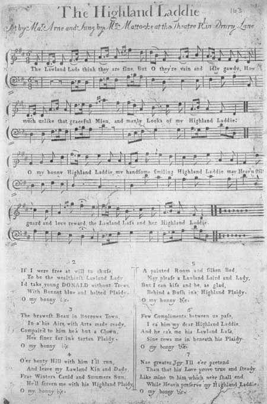
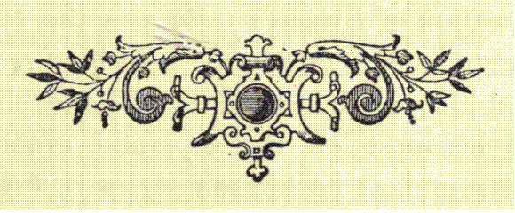
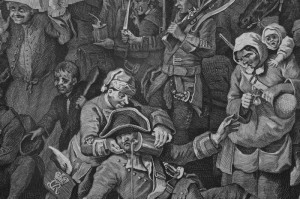

Jacobite Highland Laddie (The Tartan Plaidie)
Cope's strange march to Inverness
The Prince enters Edinburgh
The victory of Prestonpans
from "The True Loyalist , page 40, 1779
Tune - Mélodie"The Lowland Lads think they are fine"
Arranged by Thomas Augustine Arne (1710 - 1778),
Composer of "Rule Britannia"
Published as a (Non-Jacobite) Broadside Ballad between 1740 and 1770
Sequenced by Christian Souchon
|
To the lyrics
Jacobite version of a non-Jacobite song of which several versions circulated. The present long variant is drawn from "The True Loyalist , page 40, 1779. The non-Jacobite lyrics (1st verse) run: "The Lowland lads think they are fine, But O they're vain and idly gawdy. How much unlike that graceful mien And manly looks of my Highland laddie! Chorus O my bonny Highland laddie! My handsome, smiling Highland laddie! May Heav'n still guard and love reward The Lowland lass and her Highland laddie!"... Source: "Gentleman's Magazine" vol. XX, p.325, 1750 and "Scots Musical Museum", volume 1, N°22 (1787). Concerning the "classical" couple Lowland lass - Highland lad, see the remark about Duncan Davison The present song was also imitated by Lady Nairne in "My Bonnie Highland Laddie", that focusses on the £30.000 reward for Charlie's capture (Second column, hereafter). Besides, this text has similarities with: "When Charlie first came..." |
 |
A propos des paroles
Ce texte est la version Jacobite d'un chant dont il existe de multiples variantes. On trouvera ci après une version longue tirée de "The True Loyalist , page 40, 1779. Le chant pré-Jacobite commence ainsi: "Malgré leurs airs avantageux Ceux des plaines sont des vantards. Nul n'est jamais aussi gracieux Et viril que mon montagnard. Refrain: O mon gentil gars des Highlands! Souriant, beau comme Apollon! Est-il couple mieux assorti? Fille des plaines, gars des monts! Source: "Gentleman's Magazine" vol. XX, p.325, 1750 and "Scots Musical Museum", volume 1, N°22 (1787). A propos du couple "classique" fille des Basses Terres, gars des Hautes Terres, voir la note à propos de Duncan Davison . Il existe une adaptation Jacobite de ce chant par Lady Nairne : "Mon gentil gars des Highlands", qui prend pour thème la récompense de 30.000 £ promise pour la capture de Charlie (2ème colonne ci-après). En outre, le présent texte présente des similitudes avec celui de: "When Charlie first came..." . |

|
PRESTONPANS
1. Pr[inc]e C[harle]s is come o'er from France In Scotland, to proclaim his daddie: May the Heav'n's power preserve and keep That worthy P[rinc]e in's Highland plaidie. CHORUS: O my bonny, bonny Highland laddie, My handsome, charming, Highland laddie! May Heav'n reward and him still guard When surrounded with foes in's Highland plaidie! 2. First when he came to view our land, The graceful looks o' that young laddie Made a' our Scots hearts to warm And choice to wear the Highland plaidie. 3. But when G[eor]die heard the news, That he was come before his Daddie, [1] He thirty thousand pounds would give, To catch him in his Highland plaidie.[2] 4. He sent John C[o]pe straight to the North, With his army fierce and ready For to devour that worthy P[rinc]e, And catch him in his Highland plaidie 5. But when he came to Inverness, I told him he was South already As bold's a lion conquering all, By virtue of his Highland plaidie. [3] 6. From Inverness to Aberdeen, Where he found their ships just and ready, To carry him to Edinburgh, For to devour him in's Highland plaidie. 7. But when he came to Edinburgh, East Lothian was his first land ready; And then he swore that in Gladsmuir, He would devour him in's Highland plaidie. [4] 8. A parcel of Scots Highlanders, And country lads that were not ready, The task is small you have to do, To catch him in his Highland plaidie. 9. Our worthy P[rinc]e says to his men, For God's sake, haste and make you ready, And gratify C[o]pe's fond desire He hath to see me in my plaidie. 10. Likewise says he unto his men, This day if you'll fight for my daddie, By Heav'n's pow'r I'll set you free From tyrants, in my Highland plaidie. 11. Then they went on like lions bold, Without regard to man or baby, For they were bent with one consent, To fight and keep him in his plaidie. 12. John C[o]pe cried then unto his men, For God's sake, haste and make you ready; And let each man fly as he can. For fear he catch you in his plaidie!" 13. Some rode on horse, some ran on foot; And some, wi' fear, their heads turn'd giddy: And some cry'd, Oh! and some, Woe's me! That e'er I saw a Highland plaidie. 14. When C[o]pe was then a great way off, He said, since I was a young babie, I never met with such a fright, As when I saw him in's Highland plaidie. NOTE: Similar Verses appear, partly in "Jacobite Songs and Ballads" edited by G.S. McQuoid in 1887, partly in a modern songbook "A Jacobite Legacy" by Peter Kay. Hogg's "Relics", 2nd vol. have a shorter variant (13 stanzas) "from Mr Hardy's MSS collated with that from Mr John Wallace of Peterhead" (page 115, note page 355). |
MY BONNIE HIGHLAND LADDIE by Lady Nairne
1. Prince Charlie he's cum owre frae France, In Scotland to proclaim his daddie; May Heaven still his cause advance, And shield him in his Hieland plaidie! CHORUS O my bonnie Hieland laddie, My handsome, charming Hieland laddie! May Heaven still his cause advance, And shield him in his Hieland plaidie! 2. First when he cam to view our land, The gracefu' looks o' the princely laddie Made a' our true Scots hearts to warm, And blythe to wear the tartan plaidie. 3. But when Geordie heard the news, How he was cum afore his daddie, He thirty thousand pounds wad gie, To catch him in his Hieland plaidie. 4. But tho' the Hieland folks are puir, Yet their hearts are leal and steady; And there's no ane amang them a', That wad betray their Hieland laddie.  LE BEAU GARS DES HAUTES TERRES par Lady Nairne 1. 1. Le Prince Charles vient de France Préparer la route à son père. Souhaitons donc réussite et chance, A notre jeune Highlander ! Refrain: O quel Highlander élégant! Quel Highlander noble et charmant! Que le Ciel accorde son aide Au Highlander vêtu du plaid! 2. Quand il descendit du bateau, Il avait mis son beau tartan! Les vrais Ecossais aussitôt, Se hâtent tous d'en faire autant. 3. George promit pour qu'on lui livre, Le jeune homme vêtu du plaid, Un prix de trente mille livres, Sachant que le père approchait. 4. Mais si les Highlanders n'ont rien, Leurs cœurs sont nobles et loyaux; Il ne s'en trouva donc aucun, Pour trahir le beau jouvenceau.  This print representing the march of the Guards towards Scotland in the year 1745 is dedicated by the satirist Hogarth to "the King of Prussia, Encourager of Arts and Sciences" (who had not yet made his alliance with Great Britain at the Convention of Westminster) Source: the West Highland Museum at Fort William 5scotland). |
PRESTONPANS
1. Notre Prince vint en Ecosse Proclamer son père hardiment. Que le Ciel les Stuart exauce Et protège l'homme au tartan! REFRAIN: Jeune homme à la noble prestance Et charmant garçon des Highlands, Le Ciel protège et récompense Bonnets bleus et plaids de tartan! 2. Quand tu débarquas sur nos grèves, O jeune homme aux traits avenants, Cela fut le début d'un rêve Où l'on vit fleurir les tartans. 3. Lorsque Georges crut imminente La venue du père à présent, [1] Il déclara qu'il paierait trente Mille livres pour ce tartan. [2] 4. Oui, mais Georges près de sa dame Préfère rester prudemment. Il sort sa bourse et non sa lame Pour qu'on ne voie plus ce tartan. [3] 5. Vers le nord John Cope il dépèche, A la tête d'un régiment Mais Charlie hardiment le cherche, Bonnet bleu et plaid de tartan. 6. John Cope vers Inverness se hâte, Mais déjà le Prince descend Vers le sud, un lion opiniâtre, Ceint du baudrier, du tartan. 7. Cope alors se remet en chasse. Et fait route vers les Lothians. "O Charlie, tu perdras la face, Je te le jure, à Prestonpans! 8. Si même, il est vrai, je regrette De voir ces gens si contrariants, Bientôt ce sera chose faite: Nous aurons l'homme et son tartan!" [4] 9. Le Prince se lève à l'aurore Et il se prépare gaiement. "Marchons", dit-il, "Ce Cope adore Nos bonnets bleus et nos tartans". 10. Et sans plus attendre, on avance En rangs serrés, résolument Chacun veut se battre, en conscience, Pour le Prince, l'homme au tartan. 11. Mais bientôt John Cope à ses hommes A dit "Vite! fuyez, manants! "Sauve qui peut! Je vous l'ordonne! Le diable emporte le tartan!" 12. A cheval, à pied, en voiture, Talons ailés et titubants, Par peur d'une mésaventure, Tous fuient loin de l'homme au tartan. 13. Où donc sont Cope et ses bravades? Le lâche est-il loin à présent? Vive Charles, chers camarades, Son bonnet bleu et son tartan! 14. Quand il se vit bien loin de Charles, Il avoua "Jamais, même enfant, Je n'ai ressenti pire alarme Qu'en voyant cet homme au tartan". NOTE: La traduction s'appuie sur des textes similaires provenant de "A Jacobite Legacy" de Peter Kay et du livre de McQuoid, "Jacobite Songs et Ballads" (1887). Les "Reliques" de Hogg, 2ème vol. comprennent une variante en 13 couplets "à partir des manuscrits de M. Hardy's MSS collationnés avec ceux de M. John Wallace de Peterhead" (page 115, note page 355). Traduction Christian Souchon (c) 2006 |
Map
|
[1]
The first intelligence of Charles's arrival
was not believed by the Lords of the Regency, but was soon confirmed. A courier was despatched to Holland to hasten the return of King George, who arrived in England about the latter end of August. [2] The £30.000 reward A proclamation was issued offering a reward of £30,000 to any one who should take Prince Charles, either dead or alive. This procla- mation was met by another from Prince Charles offering the like sum for securing the person of King George, of which the following is a literal copy : " Charles, Prince of Wales, etc., regent of the kingdoms of Scotland, England, France, and Ireland, and the dominions thereunto belonging. "Whereas we have seen a scandalous and malicious paper, published in the style and form of a proclamation, bearing date the 1st instant, wherein, under the pretence of bringing us to justice, like our royal ancestor King Charles I. of blessed memory, there is a reward of thirty thousand pounds sterling promised to those who shall deliver us into the hands of our enemies ; we could not but be moved with a just indignation at so insolent an attempt And though, from our nature and principles, we abhor and detest a practice so unusual among Christian princes, we cannot but, out of a just regard to the dignity of our person, promise the like reward of thirty thousand pounds sterling to him or those who shall seize and secure, till our farther orders, the person of the Elector of Hanover, whether landing, or attempting to land, in any part of his Majesty*s dominions. Should any fatal accident happen from hence, let the blame lie entirely at the door of those who first set the infamous example. " Charles, P. R., Given in our camp, at Kinlocheill, August the 22nd, 1745. By his Highness's command. Jo. Murray." Source: MacQuoid's "Jacobite Songs and Ballads" [3] Fascination exercised by the Prince over the Highlands folks and chiefs On 30th August, Charlie reached the castle of Blair which had been abandoned on his approach by the Duke of Atholl . Tullibardine took possession of the castle as his own property and invited Charles and the Highland Chiefs to supper. At Blair, where Charles was joined by Lord Nairne , many men had to be brought up as they were loitering behind since they had been denied the pleasure of pursuing Cope! On the 3d of September they entered Dunkeld where Charles spent the night at Nairne's house. At Perth which they reached on the following day, Charles entered in a superb dress of tartan mounted on captain Scott's charger. The Chevalier was immediately proclaimed at the cross , but the principal magistrates and inhabitants had fled to Edinburgh. An advanced party under McD of Keppoch reinforced by Clanranald entered the nearby port of Dundee and captured two vessels with arms and ammunition. At Perth Charles was joined by the Duke of Perth , Lord Ogilvie , Strathallan , old Robertson of Strowan , Oliphant of Gask, and others but the chief personage who rallied at Perth was Lord George Murray , introduced to the Prince by his brother Tullibardine. Aware of the brilliant qualifications of Lord George, the prince, almost immediately on his arrival at Perth, appointed him lieutenant-general , to the great satisfaction of the clans, to whom he was favourably known The first thing Lord George did was to organize a commissariat department so as to prevent his men from straggling, a practice strongly felt in the previous rising . Small knapsacks were given the men to carry meal to feed on in forced marches. The Highland army staid in Perth for a few days to give the new adherents time to raise their men -whereby the Duke of Perth was accused of the crime of shooting one or two of his refractory tenants- and to refill the war treasury with solicited contributions and public money collected in the nearby towns and counties. On the 8th of September Charles assisted to a Protestant Service. Source: Electricscotland.com [4] Cope's bragging : Among other boasting speeches ascribed to Cope, the following is said to have been addressed by him to his army the day before the battle: " Gentlemen, you are about to fight with a parcel of rabble, a small number of Highlanders, a parcel of brutes. You can expect no booty from such a poor, despicable pack. But I have authority to declare that you shall have eight full hours' plunder and pillage of Edinburgh, Leith, and suburbs (the places which harboured and succoured them), at your discretion, with impunity." Source: MacQuoid's "Jacobite Songs and Ballads" |
[1]
Les premières informations relatives à l'arrivée de Charles
furent d'abord accueillies avec incrédulité par le Conseil de régence, avant d'être confirmées. Un messager fut envoyé en Hollande pour hâter le retour du roi Georges qui arriva en Angleterre ver la fin août. [2] La récompense de 30.000 £. Une proclamation fut faite pour promettre une récompense de 30.000 £ (plus de 4 tonnes d'or pur!) à quiconque prendrait le Prince Charles mort ou vif. Le Prince y répondit par une autre proclamation promettant la même somme à quiconque s'assurerait de la personne du roi Georges. En voici la transcription littérale: "Charles, Prince de Galles, etc., régent des royaumes d'Ecosse, d'Angleterre, de France et d'Irlande et des états y rattachés, "Au vu d'un écrit scandaleux et pernicieux publié dans le style et sous la forme d'une proclamation, datée du 1er de ce mois, où, sous prétexte de nous livrer à la justice, comme notre royal ancêtre d'illustre mémoire, le roi Charles I., une récompense de 30 mille livres sterling est promise à ceux qui nous livrerons aux mains de nos ennemis, nous n'avons pu que ressentir une indignation justifiée devant une telle insolence. Et bien que notre caractère et nos convictions nous font détester et abhorrer une pratique aussi inhabituelle entre princes chrétiens, nous ne pouvons, eu égard à la dignité de notre personne, que promettre la même récompense de trente mille livres sterling, à celui ou ceux qui se saisiront et s'assureront jusqu'à nouvel ordre de notre part, de la personne de l'Electeur de Hanovre, lors de son débarquement ou de sa tentative de débarquement, sur une partie quelconque des territoires de Sa Majesté. Si quelque fatal accident se produisait de ce fait, la faute en incomberait entièrement à ceux qui les premiers ont donné ce funeste exemple. "Charles, P.R. Donné en notre camp, à Kinlocheill, ce 22 août 1745. Par ordre de S.A., John Murray". Source: MacQuoid's "Jacobite Songs and Ballads" [3] Fascination exercée par le prince sur le peuple et les chefs des Highlands Le 30 août, Charlie entrait au château de Blair qui avait été abandonné par le Duc d'Atholl . Tullibardine reprit possession de sa propriété et invita Charles et les chefs de clans à souper. A Blair, où Charles fut rejoint par Lord Nairne , il fallut aller chercher un certain nombre d'hommes qui traînaient les pieds, dépités qu'ils étaient d'être privés du plaisir de poursuivre Cope! Le 3 on entra à Dunkeld où Charles se rendit à l'invitation de Lord Nairne. A Perth , où l'on arriva le lendemain, Charles fit une entrée solennelle, dans un superbe costume de tartan , chevauchant le coursier pris au capitaine Scott's . On procéda aussitôt à la proclamation du Chevalier au "mercat cross" , mais les édiles et les notables s'étaient réfugiés à Edimbourg. Un bataillon d'éclaireurs commandé par McD of Keppoch renforcé par des Clanranald poussa jusqu'à Dundee où il s'empara de deux bateaux avec leurs armes et munitions. A Perth, Charles fut rejoint par le Duc dePerth , Lord Ogilvie , Strathallan , le vieillard Robertson de Strowan , Oliphant de Gask, et quelques autres mais le ralliement le plus marquant fut celui de Lord George Murray , qui fut présenté au Prince par son frère Tullibardine. Bien au fait du brillant palmarès du nouveau venu, le Prince en fit presque aussitôt son lieutenant - général à la grande satisfaction des clans qui ne pouvaient qu'approuver ce choix. La première chose que fit Lord George, fut d'organiser un service d'intendance pour prévenir le maraudage, pratique qui avait terni l'aura du précédent soulèvement . Des musettes furent distribuées aux hommes avec assez de farine pour se nourrir pendant les marches forcées. L'armée des Highlands resta stationnée à Perth pour quelques jours, afin de donner le temps aux nouveaux partisans de lever leurs troupes - on accuse même le Duc de Perth d'avoir, ce faisant, abattu un ou deux de ses métayers récalcitrants. Afin aussi de remplir les caisses par des contributions qu'on avait sollicitées ou par les deniers publics prélevés dans les bourgs et comtés des environs. Le 8 septembre Charles assista à un service religieux protestant. Source: Electricscotland.com [4] Les bravades de Cope : Entre autres fanfaronnades, on attribue à Cope cette harangue à son armée, la veille de la bataille: "Messieurs, vous allez vous battre contre un tas de crapules, une poignée de Montagnards, une bande de brutes. Il n'y a pas beaucoup de butin à prendre sur ces pauvres bougres. Mais je suis autorisé à déclarer que vous aurez huit heures entières pour piller et mettre à sac Edimbourg, Leith et leurs faubourgs (ceux qui ont offert refuge et secours aux insurgés), à discrétion et en toute impunité. Source: MacQuoid's "Jacobite Songs and Ballads" |